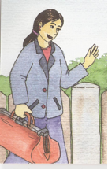

CONSULTATIONS ET VISITES À DOMICILE
PENDANT LA GROSSESSE.
Pendant votre grossesse votre caisse de maladie prend en charge 1 seule visite à votre domicile par la sage-femme.
Profitez de cette consultation à votre domicile pour avoir des renseignements sur la grossesse, l’accouchement, le nouveau-né, l’allaitement et les suites de couches.
|
Si vous voulez profiter d’autres visites ou consultations prénatales, faites-le moi savoir. Celles-ci seront à votre charge. Mais en cas de pathologie, la caisse de maladie rembourse d’autres visites et des soins obstétricaux. Mais il vous faut une ordonnance médicale. Les sages-femmes au Luxembourg revendiquent depuis des années des tarifs pour tous les actes qu’elles peuvent prester (par leur formation et par leurs attributions) ainsi que le remboursement par la sécurité sociale. Dans les autres pays qui sont membres de l’UE, ces actes sont remboursés d’office. Il est prouvé que beaucoup de femmes préfèrent d’être pris en charge par une sage-femme, qui veille aux aspects physiologiques autour de l’accouchement. |
 (source: Was macht eigentlich eine Hebamme? von Tara R. Franke) |